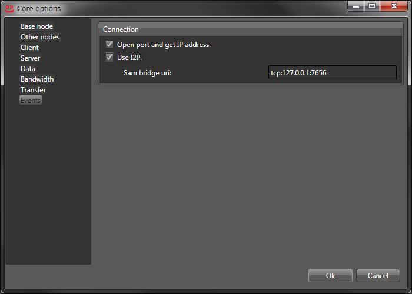
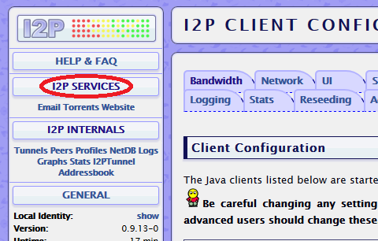
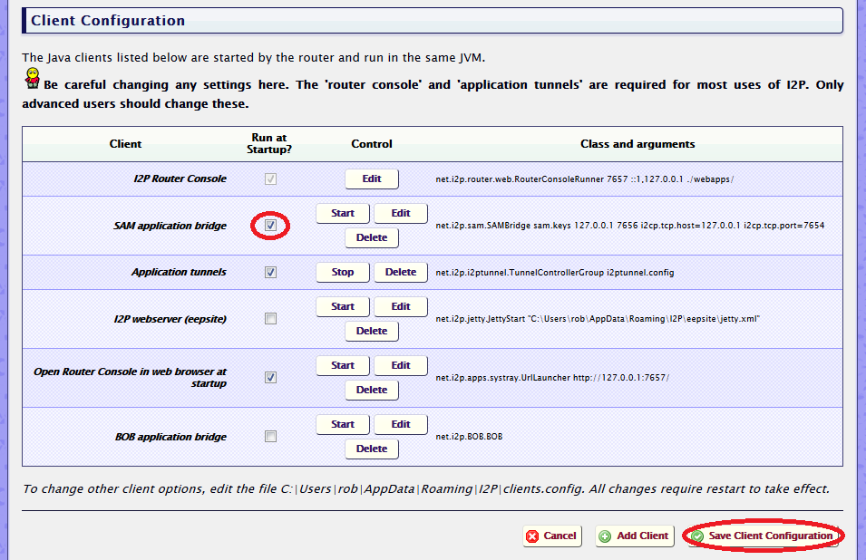
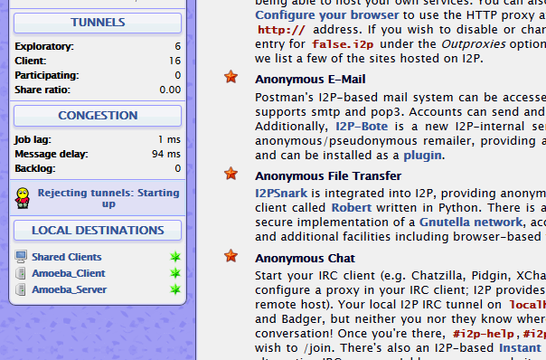

始めに、Amoebaのメニューの"Tools>Options>Events"の"Use I2P."にチェックが入っていることを確認してください。
次に、I2Pの"I2P SERVICES"を開きます。
"SAM application bridge"にチェックを入れ、"Save Client Configuration"をクリックして設定を保存します。
最後に、I2PとAmoebaを再起動すれば、"LOCAL DESTINATIONS"でI2Pを使用した接続が確認できるようになります。
